Week 1: Introduction to Data Visualization
ผศ.ดร.สิวะโชติ ศรีสุทธิยากร
ภาควิชาวิจัยและจิตวิทยาการศึกษา
คณะครุศาสตร์ จุฬาลงกรณ์มหาวิทยาลัย
1. แนะนำรายวิชา
รายวิชา 2758686 Data Visualization
หน่วยกิต : 2.0 (2.0 - 0.0 - 6.0)
Course Objectives
ออกแบบทัศนภาพข้อมูลได้อย่างเหมาะสม
ใช้เทคโนโลยีที่เกี่ยวข้องและเหมาะสมในการสร้างทัศนภาพข้อมูล
สามารถค้นหาเอกสารอ้างอิงหรือเอกสารวิชาการที่เกี่ยวข้อง เพื่อสนับสนุน/
แก้ปัญหาในการทำงานอภิปรายและวิพากษ์อย่างสร้างสรรค์ในประเด็นที่เกี่ยวกับทัศนภาพข้อมูล/วิทยาการข้อมูลการศึกษา
มีจรรยาบรรณและจริยธรรมทางวิชาการ
Course Outline
การวัดประเมินผล
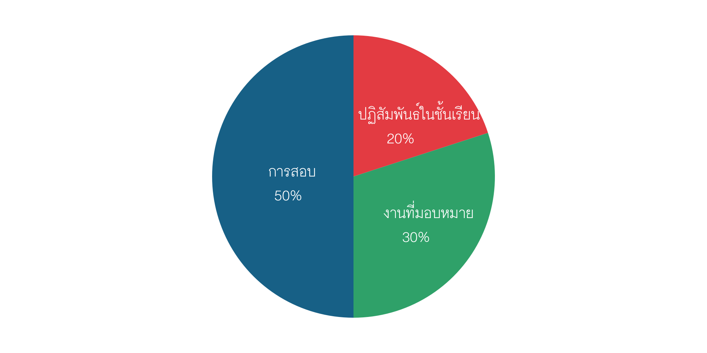หนังสือ/เอกสารแนะนำ
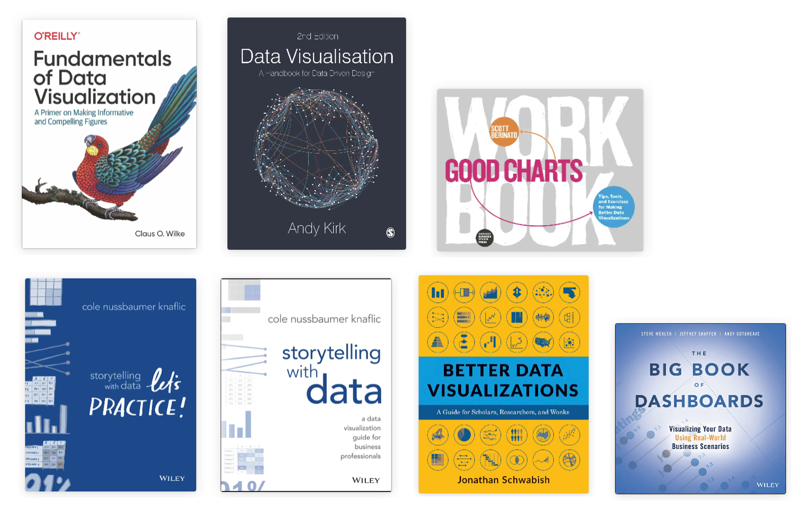แหล่งการเรียนรู้และแหล่งข้อมูลแนะนำ
2. Basic Concepts
What’s Data Visualization?
“The visual representation and presentation of data to facilitate understanding” (Kirk, 2019)
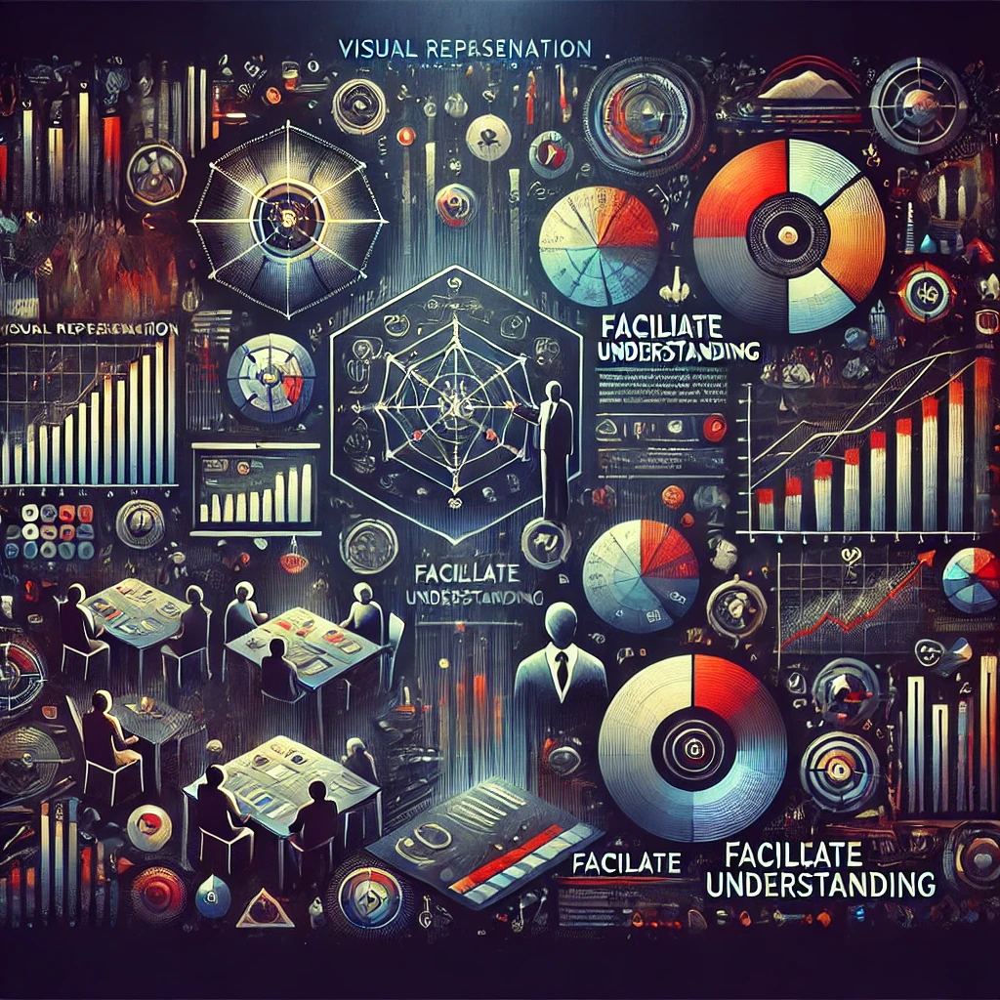
Visual Representation (1)
กระบวนการออกแบบ/ตัดสินใจเพื่อแปลงข้อมูลที่มีให้อยู่ในรูปของแผนภาพ หรืออาจกล่าวว่าเป็นกระบวนการตัดสินใจเลือกใช้แผนภาพที่เหมาะสมสำหรับแสดงสาระสำคัญของข้อมูล
Marks – องค์ประกอบที่ใช้แสดงข้อมูล
- จุด (points)
- เส้น (lines)
- แท่ง (bars)
- พื้นที่ (areas)
- ปริมาตร (volume)
Attributes – variants ของ Marks
- ตำแหน่ง (position)
- ขนาด (size)
- สี (color)
- รูปร่าง (shape)
- ทิศทาง (orientation)
- ลักษณะพื้นผิว (texture)
Visual Representation (2)
เงินเดือนอาจารย์มหาวิทยาลัยเป็นอย่างไร ?
| ID | salary | rank |
|---|---|---|
| 1 | 139750 | Prof |
| 2 | 173200 | Prof |
| 3 | 79750 | AsstProf |
| 4 | 115000 | Prof |
| 5 | 141500 | Prof |
| 6 | 97000 | AssocProf |
| 7 | 175000 | Prof |
| 8 | 147765 | Prof |
| 9 | 119250 | Prof |
| 10 | 129000 | Prof |
| 11 | 119800 | AssocProf |
| 12 | 79800 | AsstProf |
| 13 | 77700 | AsstProf |
| 14 | 78000 | AsstProf |
| 15 | 104800 | Prof |
| 16 | 117150 | Prof |
| 17 | 101000 | Prof |
| 18 | 103450 | Prof |
| 19 | 124750 | Prof |
| 20 | 137000 | Prof |
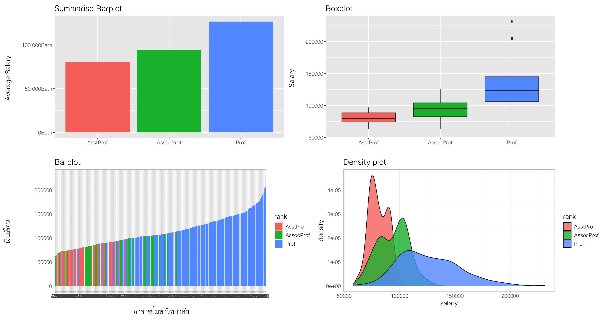
Visual Representation (3)
Source: ดัดแปลงจาก Kirk (2019)
Visual Representation (4)
Source: https://www.researchgate.net/figure/The-Mackinlay-ranking-of-perceptual-task_fig2_221098028
Presentation (1)
การจัดรูปแบบและการออกแบบองค์ประกอบทั้งหมดของการแสดงภาพ เพื่อสื่อสารข้อมูลให้มีประสิทธิภาพสูงสุด
ต้องคำนึงถึงทั้งการแสดงผล (representation) และการนำเสนอ (presentation) อย่างเป็นระบบและเชื่อมโยงกัน การเลือกประเภทของแผนภาพหรือการเพิ่มฟีเจอร์ interactive ต้องมีการคิดถึงทุกองค์ประกอบที่เกี่ยวข้องเพื่อให้การสื่อสารข้อมูลมีประสิทธิภาพสูงสุด
หลายครั้งการปรับแต่ง/เพิ่มองค์ประกอบเพียงเล็กน้อย ช่วยให้ประสิทธิภาพในการสื่อสารข้อมูลดีขึ้นได้อย่างมาก
Presentation (2)
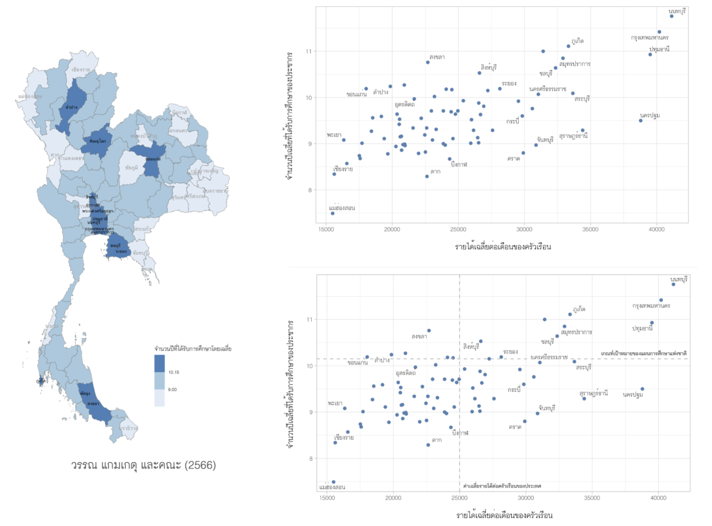Presentation (3)
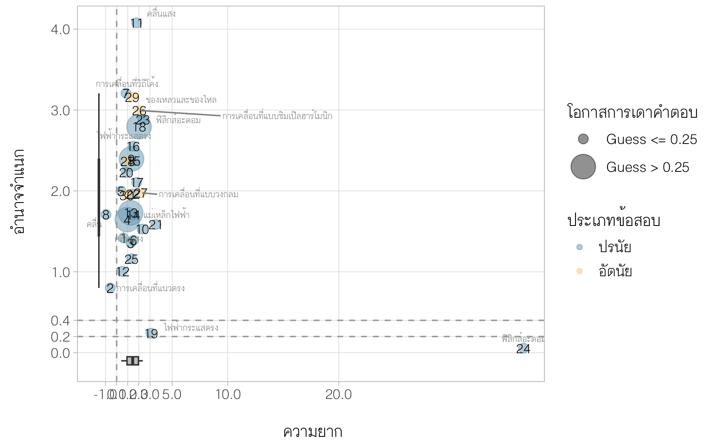
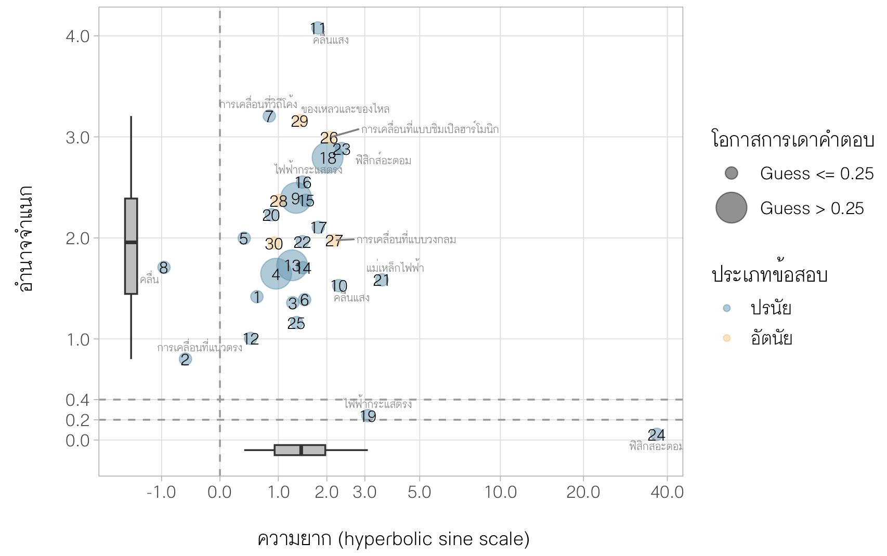
Source: สิวะโชติ ศรีสุทธิยากร และคณะ (2567)
Presentation (4)
Source: Knaflic (2015)
Facilitate Understanding (1)
ทัศนภาพข้อมูลที่สร้างขึ้นควรมีวัตถุประสงค์หลักคือเพื่อให้กลุ่มเป้าหมายหรือผู้ใช้สามารถทำความเข้าใจข้อมูลได้ดีขึ้น
ทุกองค์ประกอบของการออกแบบควรมุ่งเน้นไปที่การทำให้ผู้ชมสามารถรับรู้และเข้าใจข้อมูลที่แสดงได้ง่ายและชัดเจน
ประสบการณ์/ความรู้พื้นฐานของกลุ่มเป้าหมายเป็นปัจจัยที่มีผลต่อการเข้าถึงสาระสำคัญในแผนภาพ
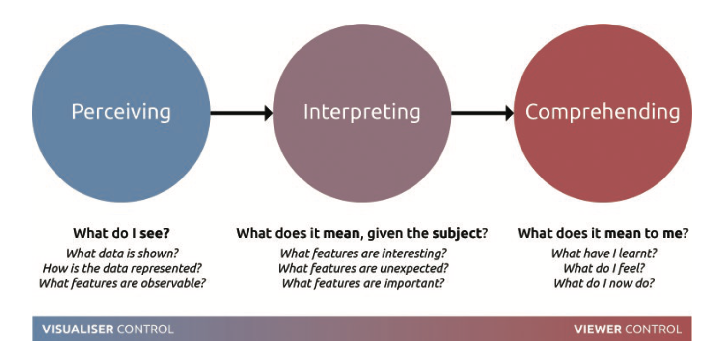
Source: Kirk (2019)
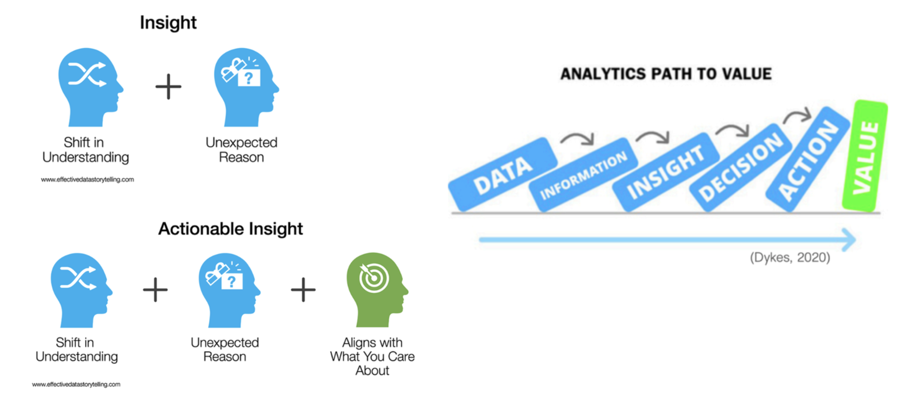
Facilitate Understanding (2)
Source: วรรณี แกมเกตุ และคณะ (2566)
Facilitate Understanding (3)
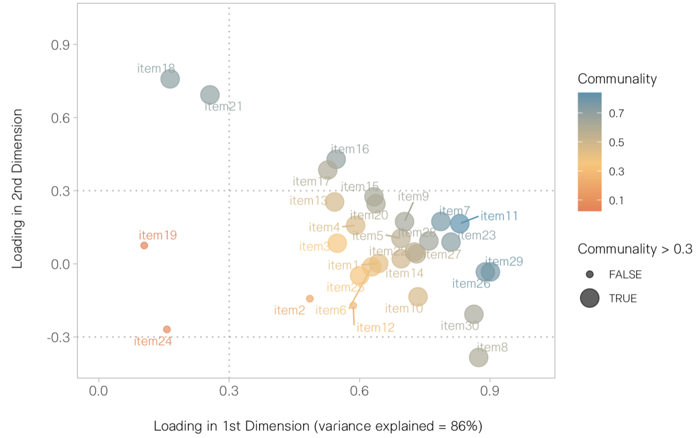
Source: สิวะโชติ ศรีสุทธิยากร และคณะ (2567)
3. Important of Data visualization
3.1 มนุษย์รับข้อมูลผ่านการมองมากที่สุด

Source: https://hautedeliciousak23.blogspot.com/2015/09/power-of-visual-communication.html
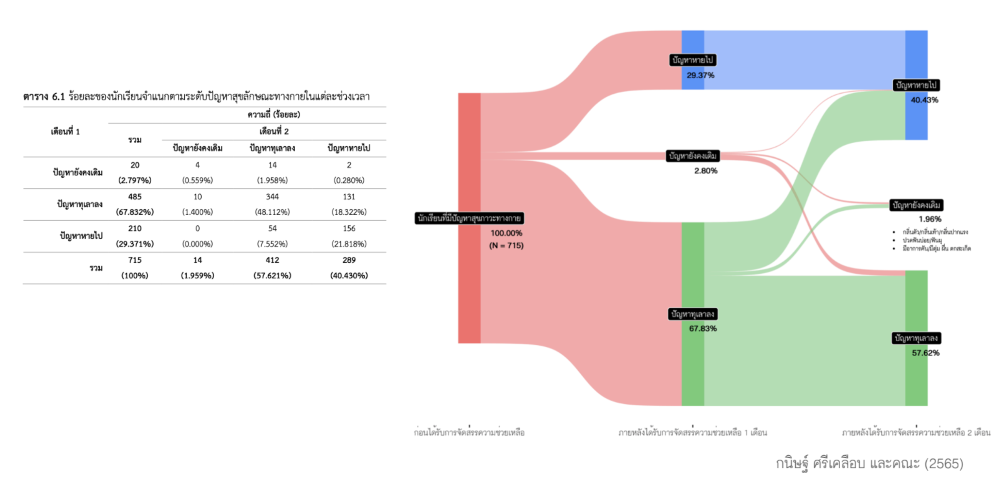
3.2 เป็นวิธีการที่มีประสิทธิภาพสูงสำหรับนำเสนอข้อมูลจำนวนมาก
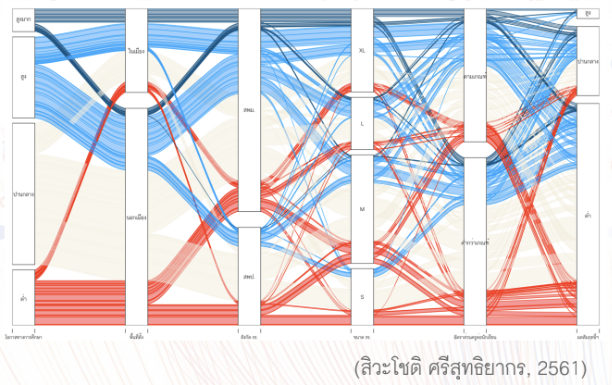

3.3 Interactive
3.4 มีประสิทธิภาพสูงสำหรับ EDA
ชุดข้อมูล anscombe ประกอบด้วยข้อมูลของตัวแปรตาม y กับตัวแปรอิสระ x จำนวน 4 ชุด วัตถุประสงค์ของการวิเคราะห์นี้คือเพื่อวิเคราะห์ความสัมพันธ์ระหว่างตัวแปรตาม y กับตัวแปรอิสระ x ของข้อมูลแต่ละชุด
Rows: 11
Columns: 8
$ x1 <dbl> 10, 8, 13, 9, 11, 14, 6, 4, 12, 7, 5
$ x2 <dbl> 10, 8, 13, 9, 11, 14, 6, 4, 12, 7, 5
$ x3 <dbl> 10, 8, 13, 9, 11, 14, 6, 4, 12, 7, 5
$ x4 <dbl> 8, 8, 8, 8, 8, 8, 8, 19, 8, 8, 8
$ y1 <dbl> 8.04, 6.95, 7.58, 8.81, 8.33, 9.96, 7.24, 4.26, 10.84, 4.82, 5.68
$ y2 <dbl> 9.14, 8.14, 8.74, 8.77, 9.26, 8.10, 6.13, 3.10, 9.13, 7.26, 4.74
$ y3 <dbl> 7.46, 6.77, 12.74, 7.11, 7.81, 8.84, 6.08, 5.39, 8.15, 6.42, 5.73
$ y4 <dbl> 6.58, 5.76, 7.71, 8.84, 8.47, 7.04, 5.25, 12.50, 5.56, 7.91, 6.89ลองคำนวณค่าสถิติบรรยายของตัวแปรตามกับตัวแปรอิสระในแต่ละชุดข้อมูล
# A tibble: 8 × 3
variable mean sd
<chr> <dbl> <dbl>
1 x1 9 3.32
2 x2 9 3.32
3 x3 9 3.32
4 x4 9 3.32
5 y1 7.50 2.03
6 y2 7.50 2.03
7 y3 7.5 2.03
8 y4 7.50 2.03ลองวิเคราะห์ความสัมพันธ์ระหว่างตัวแปรตามกับตัวแปรอิสระของข้อมูลแต่ละชุดด้วย correlation
ind dep correlation
1 x1 y1 0.8164205
2 x2 y2 0.8162365
3 x3 y3 0.8162867
4 x4 y4 0.8165214ลองวิเคราะห์ความสัมพันธ์ระหว่างตัวแปรตามกับตัวแปรอิสระในข้อมูลแต่ละชุดด้วย simple regression \(y_i = \beta_0 + \beta_1x + \epsilon_i\)
$Dataset1
# A tibble: 2 × 5
term estimate std.error statistic p.value
<chr> <dbl> <dbl> <dbl> <dbl>
1 (Intercept) 3.00 1.12 2.67 0.0257
2 X 0.500 0.118 4.24 0.00217
$Dataset2
# A tibble: 2 × 5
term estimate std.error statistic p.value
<chr> <dbl> <dbl> <dbl> <dbl>
1 (Intercept) 3.00 1.13 2.67 0.0258
2 X 0.5 0.118 4.24 0.00218$Dataset3
# A tibble: 2 × 5
term estimate std.error statistic p.value
<chr> <dbl> <dbl> <dbl> <dbl>
1 (Intercept) 3.00 1.12 2.67 0.0256
2 X 0.500 0.118 4.24 0.00218
$Dataset4
# A tibble: 2 × 5
term estimate std.error statistic p.value
<chr> <dbl> <dbl> <dbl> <dbl>
1 (Intercept) 3.00 1.12 2.67 0.0256
2 X 0.500 0.118 4.24 0.00216จากตัวอย่าง anscombe ข้างต้นจะเห็นว่าผลการวิเคราะห์ด้วยสถิติพื้นฐาน หรือการใช้โมเดลเชิงสถิติอาจให้สารสนเทศที่บิดเบือนไปจากความเป็นจริง

Airbnb
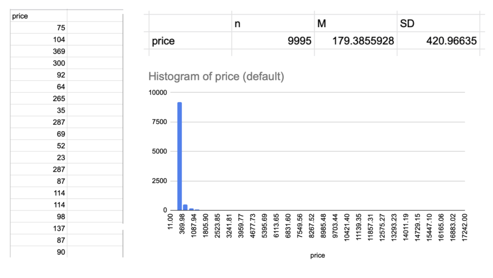
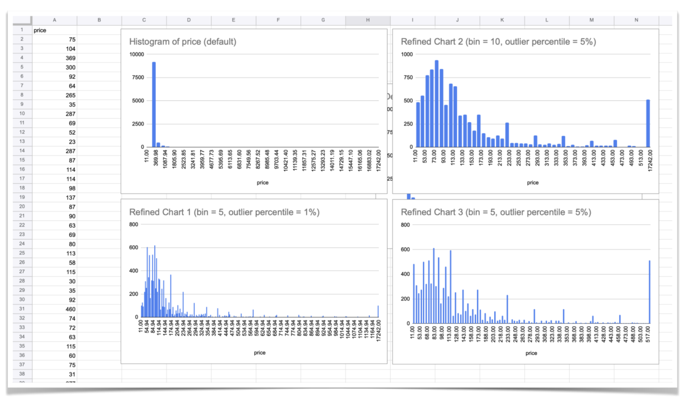
4. Types of Visualization
4.1 จำแนกตามคุณภาพ
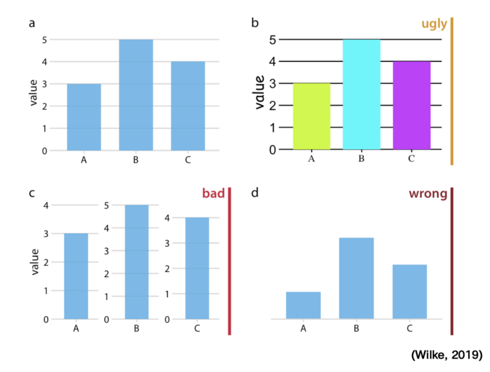
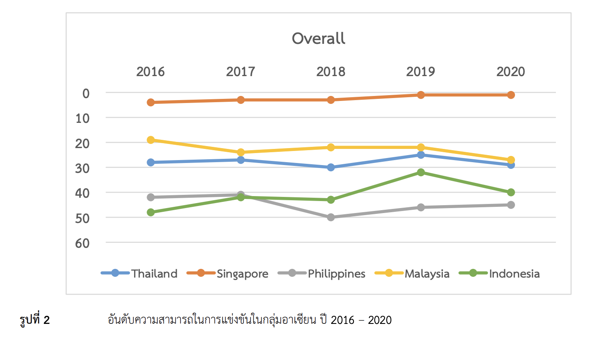
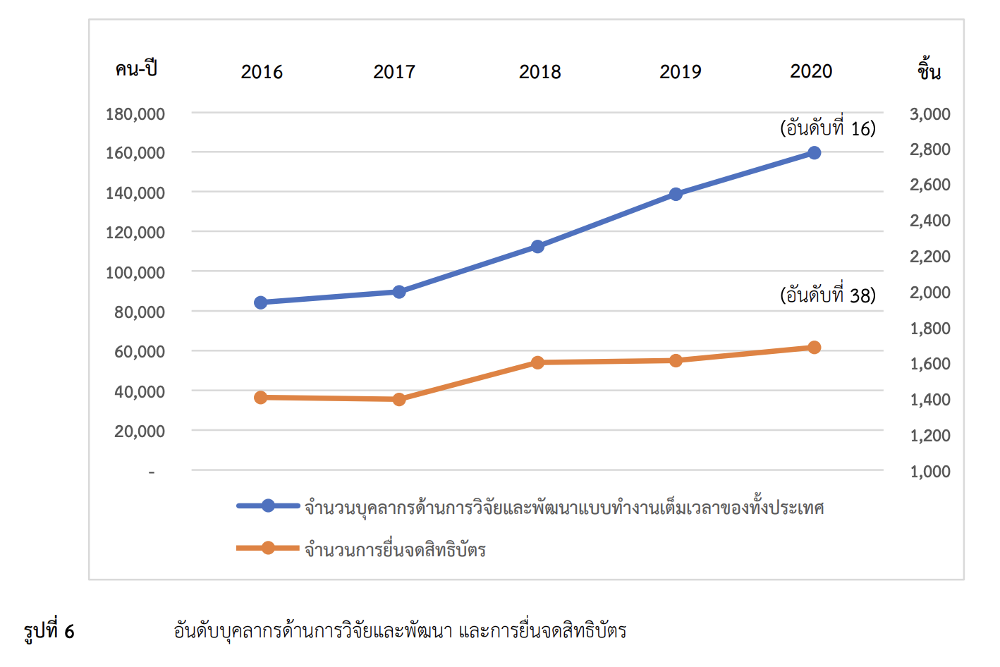
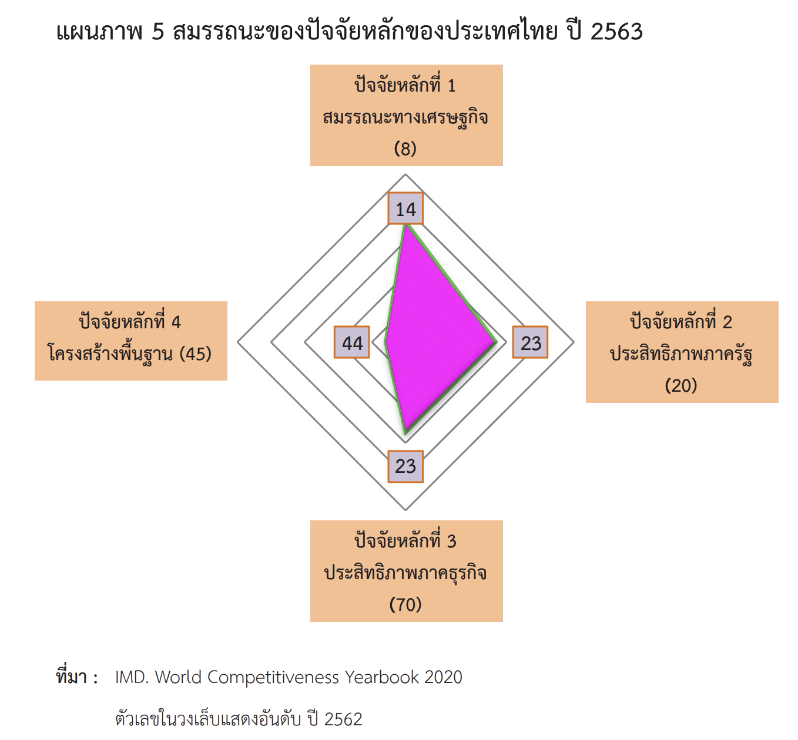
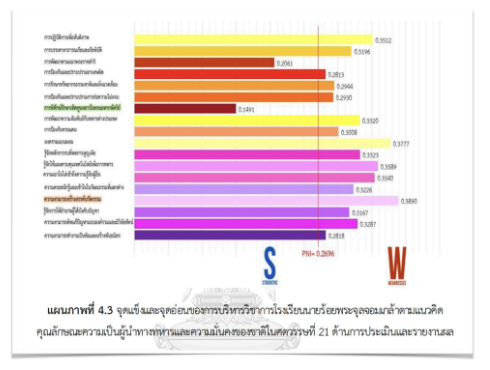
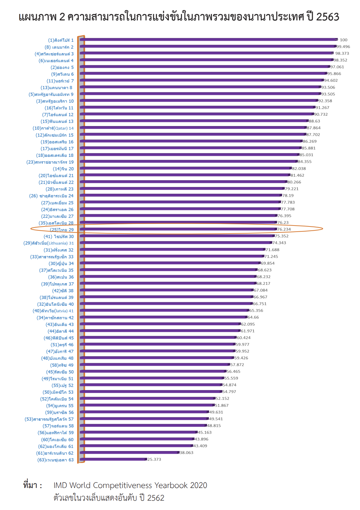
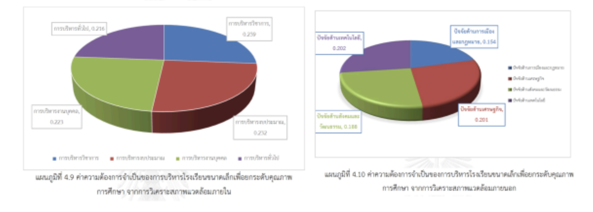
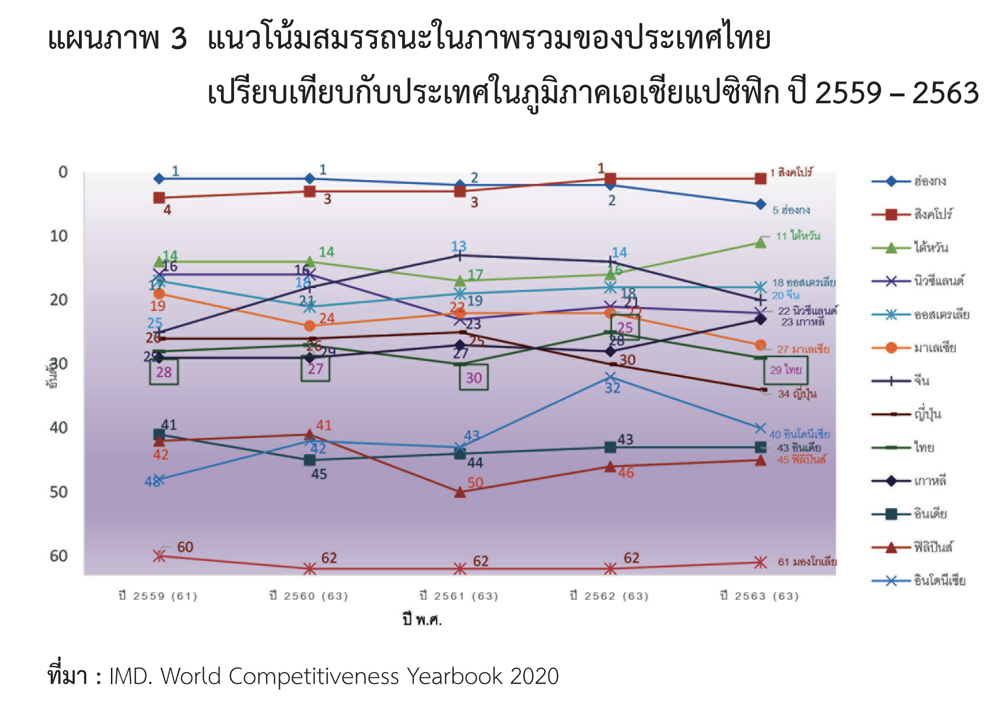
4.2 จำแนกตามวัตถุประสงค์การนำไปใช้
Is the information conceptual or data-driven?
Am I declaring something or exploring something?
Source: Berinato (2016)
4.3 จำแนกตามสารสนเทศสำคัญ
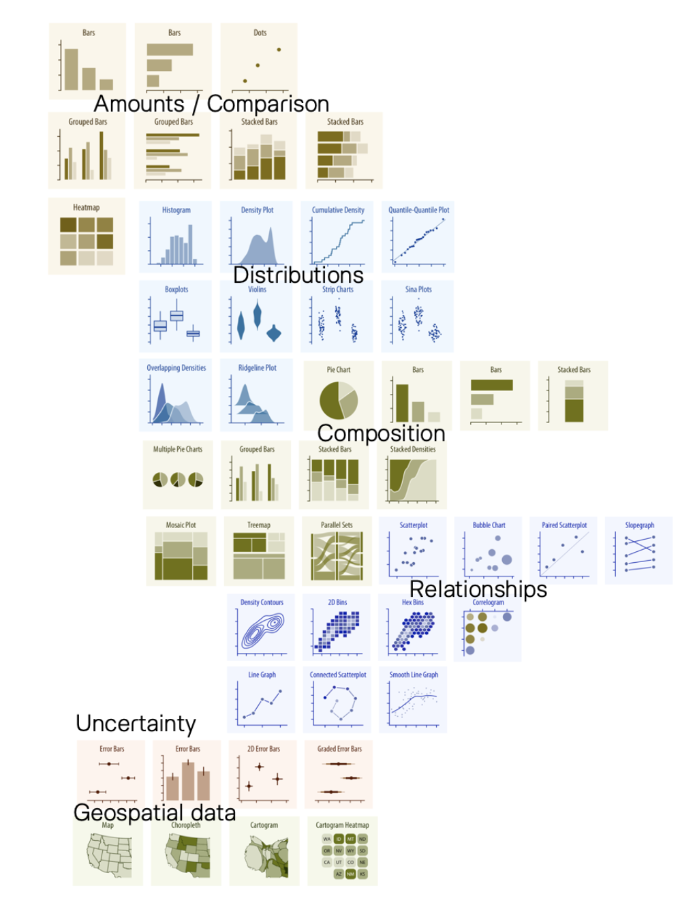
Source: Wilk (2019)
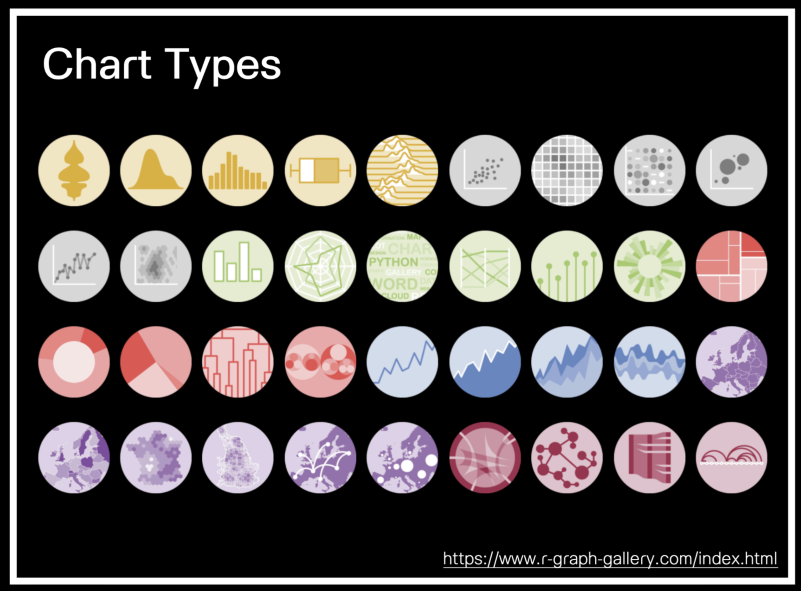
4.4 จำแนกตามลักษณะการนำเสนอ
Static
Dynamic/Interactive

week 1: 2758686 Data Visualization
ผศ.ดร.สิวะโชติ ศรีสุทธิยากร